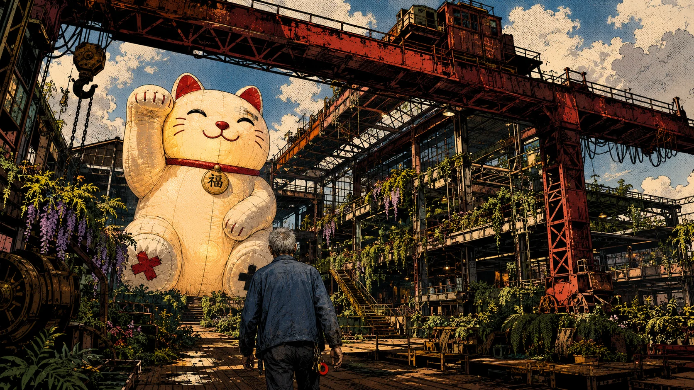
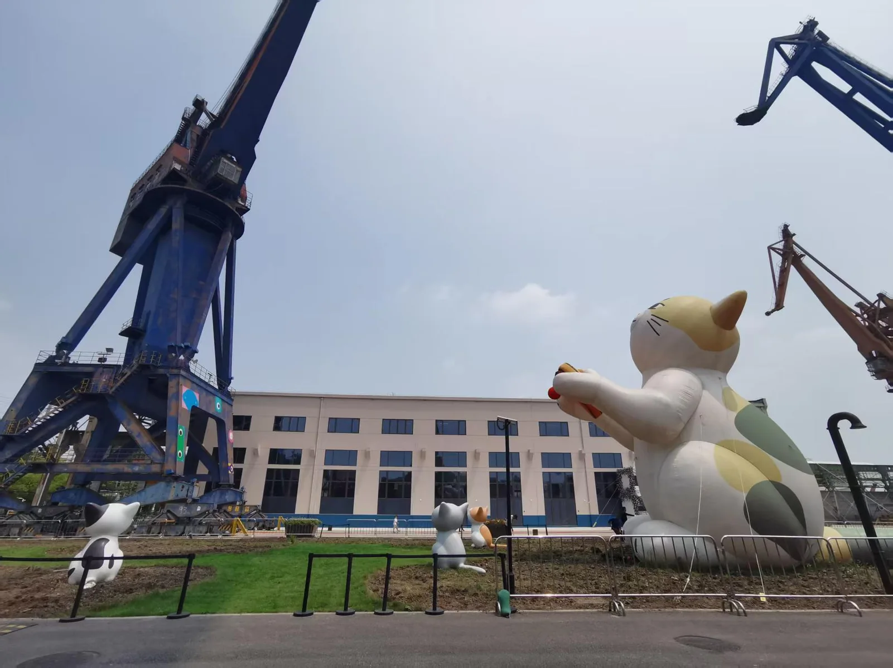
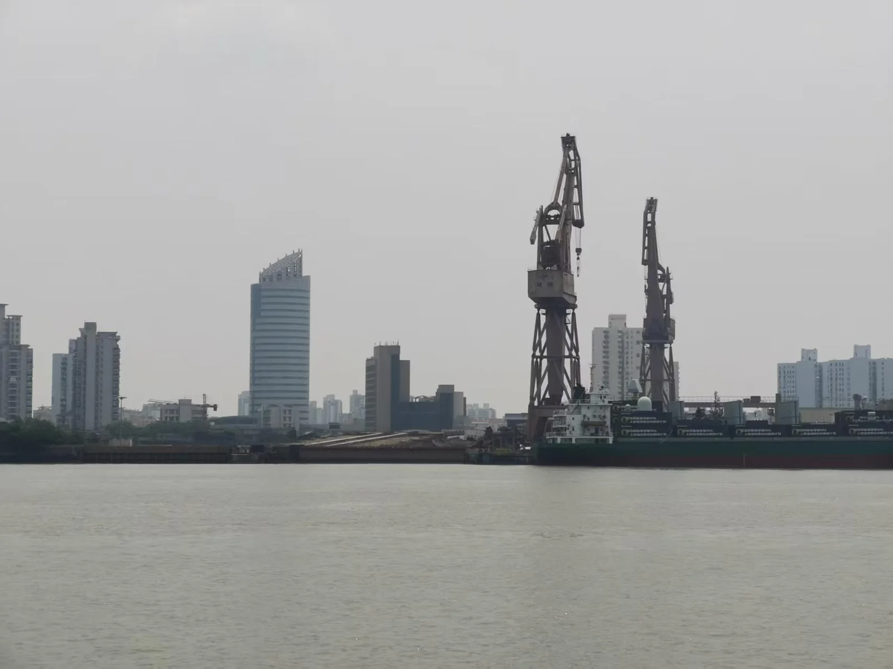
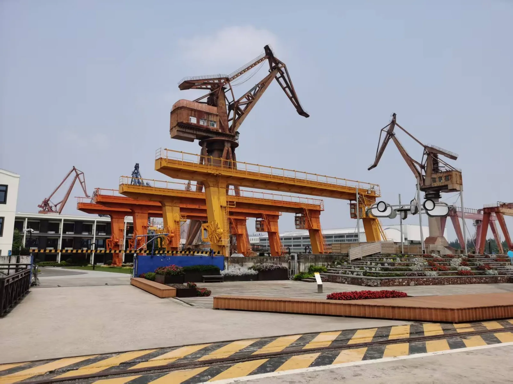
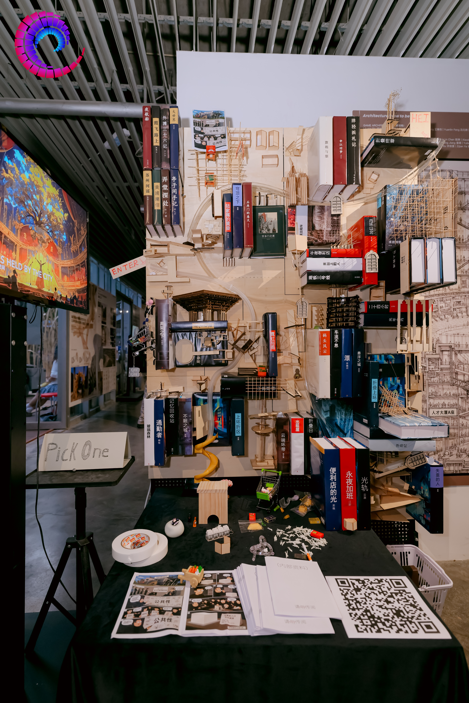

觀察
留意日常生活中反復出現的行為。
A Cat, Inflatable
一個關於近未來產業工人的故事。

工作營的 PLACE 框架將物質性、地方性、行動、文化與體驗聯繫起來。我把復興島作為穩定的空間錨點，讓圍繞它的故事在工業記憶與近未來公共花園之間轉換。
實地考察呈現出一種特別的共存狀態：仍在場的吊機、水岸基礎設施、被再利用的工業構築物，以及一隻巨型充氣貓。這些觀察成為視覺和敘事母題，但並不代表完整的紀實研究。



老楊的性格與行為取自我對身邊人的日常觀察。我去除具體身份，將不同人的特徵組合成虛構人物，再將其置於復興島的工業背景中。
留意日常生活中反復出現的行為。
去除可識別細節，形成複合人物。
將複合人物改寫為退休產業工人。
讓“修補”成為釋放記憶的動作。
有些東西不能充氣，但有些東西能補。
水中倒影、舊金屬、樓梯扶手和細小的破口，先後喚起老楊的記憶。修補的動作將這些片段與眼前的情境聯繫起來。
觀眾通過移動、懸停與探索發現記憶片段。粒子場隨操作變化，逐步呈現場景與故事線索。
預告片通過構圖、剪輯與聲音組織事件的先後與節奏，呈現老楊的記憶及修補過程。
模型把工作營中彼此獨立的故事放進同一個結構。多個入口、隨機分流與出口，讓發展的不確定性變成可以觀看和追蹤的路徑。

這個實體模型匯集了工作營組內來自不同院校的參與者所構建的故事。小球可以從多個入口進入，經由軌道的隨機分流，沿不同路徑抵達不同出口。小球的運動被用來隱喻人物的發展軌跡：起點提供了可能性，卻並不預先決定終點；路徑中的分岔使偶然性變得可見，也把故事之間抽象的聯繫轉化為共同結構中的實際運動。
在我的故事中，貓既是老楊日常生活的一部分，也是連接另一位參與者獨立項目的線索。它由老楊投餵，也曾受到阿秀的照顧；阿秀是另一個近未來故事中的主人公。這一共同聯繫讓兩個角色處於同一個世界之中，無須將各自的故事合併，也無須預設他們曾直接相遇。對同一隻貓的照顧，成為原本分離的生活之間一條細小而具體的情感紐帶。
實體模型與跨故事線索分別承擔了不同層次的表達：軌道呈現個體發展路徑的不確定性，貓則賦予其中一段聯繫具體的情感意義。每位參與者完成的仍是能夠獨立閱讀的作品，但通過這類共同線索，各自的敘事逐漸構成更大的世界觀框架。在這樣的敘事理解中，城市既由物理環境構成，也在彼此交疊的生活、偶然的聯繫與日常照料中顯現。